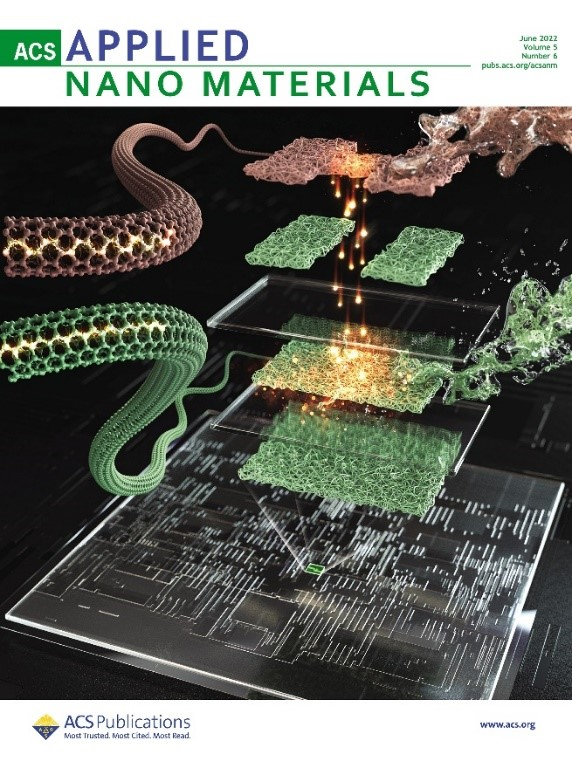
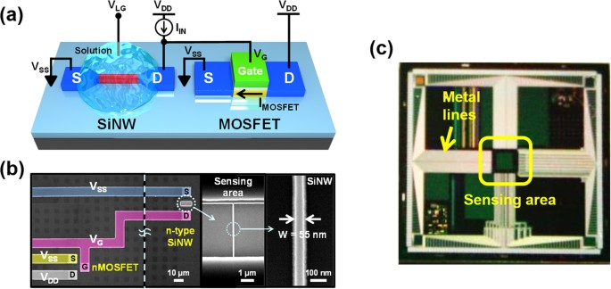

Small devices. New possibilities.
Understanding materials, designing devices and connecting their behavior to integrated electronic systems.
Advanced transistors & 3D integration
We investigate transistor structures and fabrication routes for building multiple device layers within a limited footprint. Current directions include low-temperature silicon and germanium processing, laser recrystallization and gate-all-around devices for monolithic 3D integration. The aim is to connect material quality and transistor operation with the processing constraints of vertical integration, developing building blocks for densely integrated, energy-efficient electronic systems.
Carbon nanotubes & low-dimensional electronics
Carbon nanotubes and other low-dimensional semiconductors offer ways to explore electronic devices beyond conventional silicon channels. We study how material preparation, channel geometry and gate structures shape transistor behavior, with particular interest in CNT networks and wafer-scale processing. This work brings nanoscale materials together with device fabrication, seeking practical routes from individual transistors toward integrated circuits and complementary electronic platforms.
Memory & neuromorphic devices
Our memory research examines how charge is stored, retained and controlled in semiconductor devices. Topics include the early retention behavior of vertical NAND flash and floating-gate memories made with metallic and semiconducting carbon nanotubes. In related collaborative work, CNT devices are used to emulate synaptic behavior, connecting measured device characteristics with simulations of learning systems. These studies address both information storage and alternative approaches to computation.

Read the 2022 paper ↗
Cover image credit
Semiconductor sensors
Semiconductor sensors convert changes at a material surface into electrical signals. We explore how device architecture and transistor amplification can improve the readout of small responses. A silicon nanowire–MOSFET hybrid platform combines sensing and amplification using conventional semiconductor processing, with demonstrations involving pH and charged polymers. The broader interest is in connecting nanoscale sensing elements with electronic readout for biological and chemical measurement.

J. Lee et al., Scientific Reports (2015) ↗
Figure 1 · CC BY 4.0